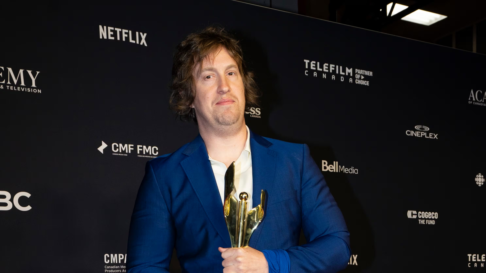
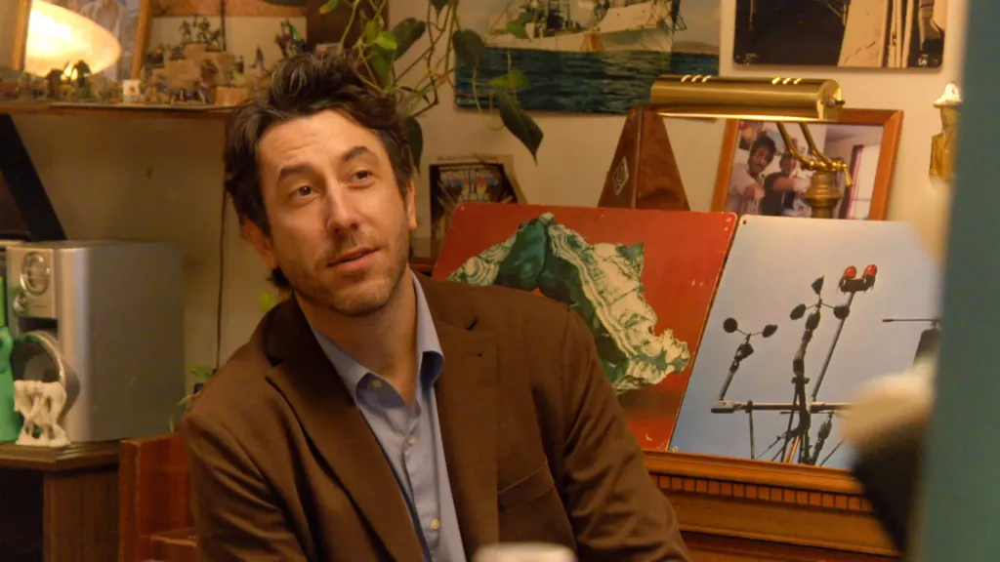
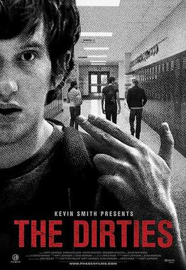
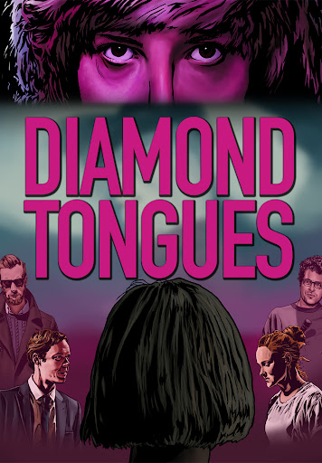
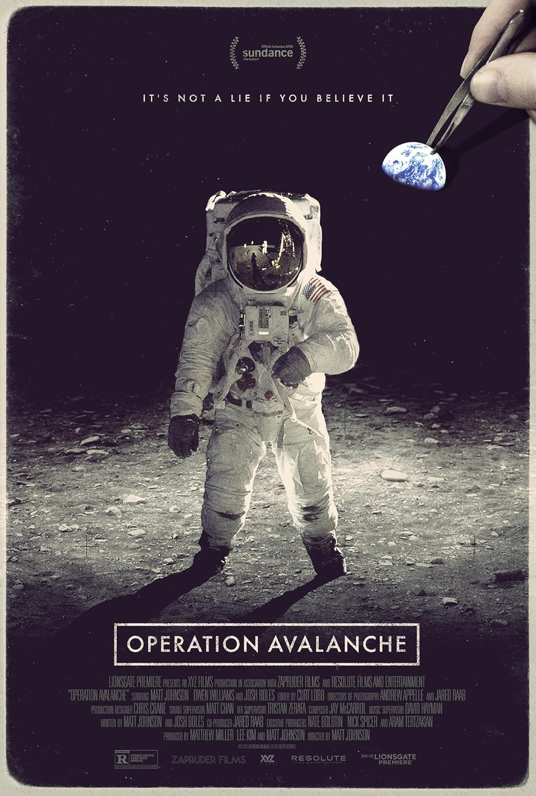
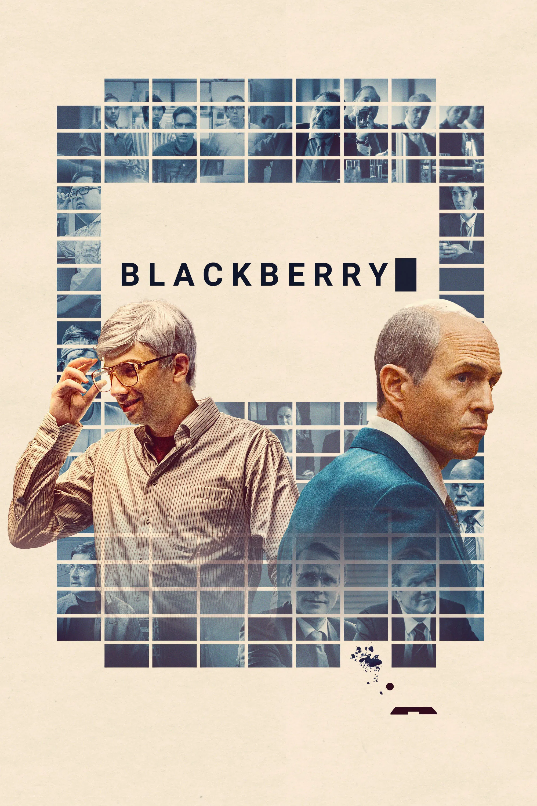
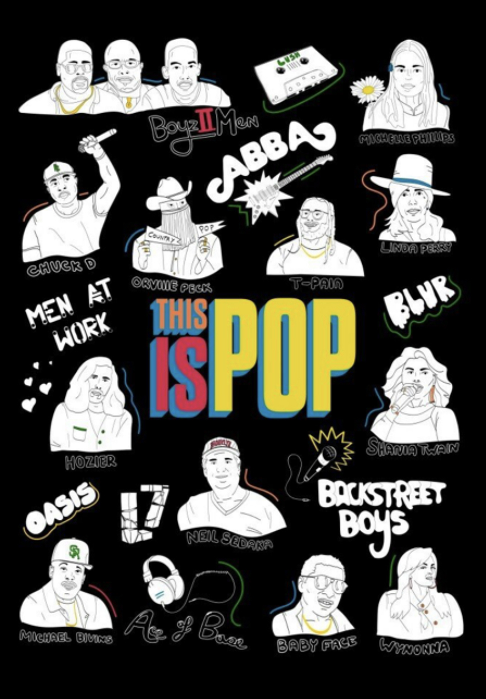
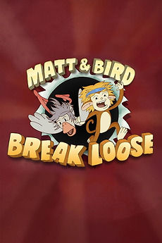
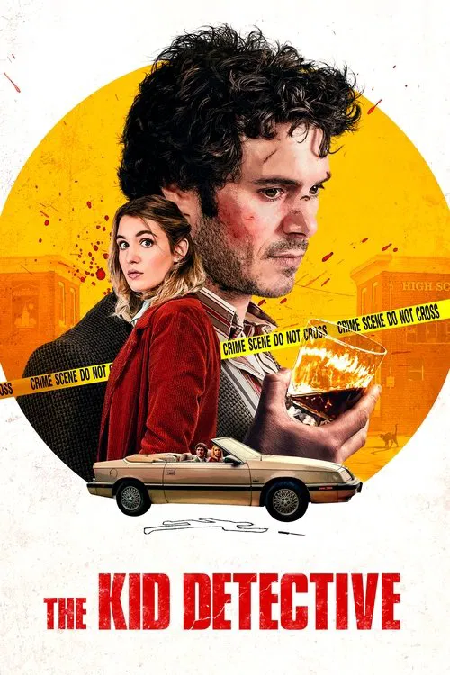
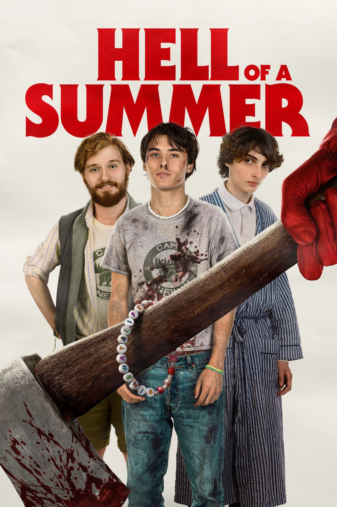

Protagonistas

Matt Johnson
Matt Johnson es un director de cine, escritor, productor y actor canadiense. Primero atrajo elogios por sus largometrajes independientes de bajo presupuesto, incluyendo The Dirties (2013) y Operation Avalanche (2016). Johnson alcanzó el reconocimiento y el éxito comercial con su tercer largometraje, BlackBerry (2023), que documentó el auge y la caída del teléfono BlackBerry.
"I've been thinking about this for a long time and I really think this is the one."

Jay McCarrol
Jay McCarrol es un músico, compositor, escritor, actor, animador y comediante canadiense. Su trabajo como compositor se extiende a The Kid Detective de Evan Morgan, protagonizada por Adam Brody y Hell of a Summer. Hasta 2026, había compuesto la música de todas las películas de Johnson.
"Can we just talk about this for a second?"
Proyectos con Matt Johnson




Proyectos con Jay McCarrol



